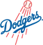

Historical player · C
Bill Krieg
- Position
- C
- Bats/Throws
- R/R
- Height/Weight
- 5'8", 181 lb
- Born
- Jan 29, 1859 in Petersburg, VA
- Major-league seasons
- 1884–1887 (4)
- Main franchise
 Chicago Cubs
Chicago Cubs- Status
- Retired
| Year | Team | Lg | G | PA | AB | R | H | 2B | 3B | HR | RBI | SB | CS | BB | K | AVG | OBP | SLG | OPS | WAR |
|---|---|---|---|---|---|---|---|---|---|---|---|---|---|---|---|---|---|---|---|---|
| 1884 | Chicago White Stockings | MLB | 71 | 300 | 279 | 35 | 69 | 15 | 4 | 0 | 0 | 10 | 11 | 11 | 11 | .247 | .282 | .330 | .612 | 0.5 |
| 1885 |  Brooklyn Grays | MLB | 17 | 63 | 60 | 7 | 9 | 4 | 0 | 1 | 5 | 1 | 3 | 2 | 6 | .150 | .177 | .267 | .444 | -0.3 |
| 1885 | Chicago White Stockings | MLB | 1 | 3 | 3 | 0 | 0 | 0 | 0 | 0 | 0 | 0 | 0 | 0 | 2 | .000 | .000 | .000 | .000 | 0.0 |
| 1885 total | 18 | 66 | 63 | 7 | 9 | 4 | 0 | 1 | 5 | 1 | 3 | 2 | 8 | .143 | .169 | .254 | .423 | -0.4 | ||
| 1886 |  Washington Nationals Washington Nationals | MLB | 27 | 104 | 98 | 11 | 25 | 6 | 3 | 1 | 15 | 2 | 4 | 3 | 12 | .255 | .284 | .408 | .692 | 0.2 |
| 1887 | Washington Nationals | MLB | 25 | 105 | 95 | 9 | 24 | 4 | 1 | 2 | 17 | 2 | 4 | 7 | 5 | .253 | .311 | .379 | .690 | -0.1 |
| Career | 4 seasons | 141 | 575 | 535 | 62 | 127 | 29 | 8 | 4 | 37 | 15 | 22 | 23 | 36 | .237 | .275 | .344 | .619 | 0.2 |
| Year | Team | Pos | G | GS | Inn | TC | PO | A | E | DP | Fld% |
|---|---|---|---|---|---|---|---|---|---|---|---|
| 1884 | Chicago White Stockings | C | 52 | 39 | 454.0 | 584 | 429 | 115 | 40 | 3 | .932 |
| 1884 | Chicago White Stockings | 1B | 1 | 0 | 5.0 | 7 | 6 | 0 | 1 | 0 | .857 |
| 1884 | Chicago White Stockings | SS | 1 | 0 | 2.0 | 0 | 0 | 0 | 0 | 0 | - |
| 1884 | Chicago White Stockings | LF | 21 | 21 | 164.2 | 32 | 21 | 1 | 10 | 1 | .688 |
| 1884 | Chicago White Stockings | CF | 10 | 10 | 76.0 | 18 | 12 | 1 | 5 | 0 | .722 |
| 1884 | Chicago White Stockings | RF | 3 | 3 | 25.1 | 4 | 3 | 0 | 1 | 0 | .750 |
| 1885 | Brooklyn Grays | C | 12 | 9 | 100.0 | 78 | 56 | 15 | 7 | 0 | .910 |
| 1885 | Brooklyn Grays | 1B | 5 | 2 | 38.0 | 42 | 38 | 1 | 3 | 3 | .929 |
| 1885 | Chicago White Stockings | RF | 1 | 1 | 9.0 | 10 | 6 | 2 | 2 | 0 | .800 |
| 1886 | Washington Nationals | 1B | 27 | 27 | 200.0 | 238 | 227 | 5 | 6 | 7 | .975 |
| 1887 | Washington Nationals | 1B | 16 | 10 | 125.0 | 149 | 140 | 5 | 4 | 5 | .973 |
| 1887 | Washington Nationals | LF | 7 | 4 | 35.0 | 7 | 6 | 0 | 1 | 0 | .857 |
| 1887 | Washington Nationals | CF | 2 | 1 | 10.0 | 2 | 2 | 0 | 0 | 0 | 1.000 |
| Career | C | 64 | 48 | 554.0 | 662 | 485 | 130 | 47 | 3 | .929 | |
| Career | 1B | 49 | 39 | 368.0 | 436 | 411 | 11 | 14 | 15 | .968 | |
| Career | LF | 28 | 25 | 199.2 | 39 | 27 | 1 | 11 | 1 | .718 | |
| Career | CF | 12 | 11 | 86.0 | 20 | 14 | 1 | 5 | 0 | .750 | |
| Career | RF | 4 | 4 | 34.1 | 14 | 9 | 2 | 3 | 0 | .786 | |
| Career | SS | 1 | 0 | 2.0 | 0 | 0 | 0 | 0 | 0 | - |
Seasons before 2002 are real MLB history from the OOTP export, mapped by OOTP onto this league's 30 original franchises (club names are as they were in that season). 2002 is this universe. Player names are as the export stores them (apart from a few renamed in this universe since this dump, such as Babe Ruth): OOTP gives some historical players generated names (the 586-homer career is filed under “Legendre Robinson”), and the site keeps them. Every player links to a page: 2002 players to their season pages, everyone else to a historical career page.